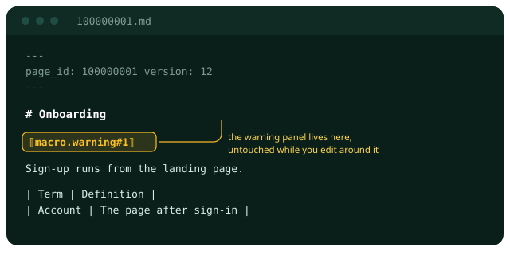
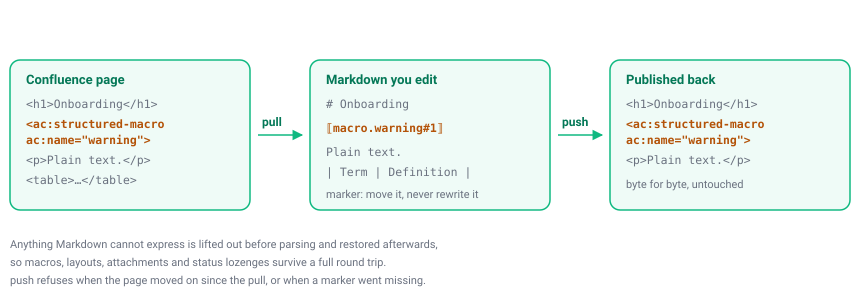

Pull a page, change it in your own editor, put it back. Your macros, panels and layouts come back exactly as they were.
Atlassian's tools stop at Cloud. If your company hosts its own Confluence, none of them reach your wiki: no editing from your machine, no diffs, no agents. You are left with the browser.
And you cannot edit the raw page format by hand. One careless change breaks the macros, the anchors and the column layouts, and usually a colleague finds out days later.
$ amber confluence pull 100000001 Onboarding (v12, space DEMO) ~/amber/pages/100000001.md $ amber confluence diff 100000001 ## Owners - Analyst: John Doe + Analyst: John Doe, standing in for the release + ## Rollout + Staged, two regions first. $ amber confluence push 100000001 -m "rollout section" Onboarding v12 -> v13
Most tools rebuild Confluence markup after you edit, and that is where macros get mangled. This one rebuilds nothing. Anything Markdown cannot carry is set aside before the conversion and put back afterwards, byte for byte.

You see a small marker where the macro sits. Move it, copy it, delete it on purpose — all fine. You cannot break what is inside it, because nothing inside it ever passes through the conversion.

If someone edited the page while you were working, publishing would replace their text with yours and leave no trace. So it stops and tells you who, when, and what to do next.
$ amber confluence push 100000001 Refusing to publish: the page changed after you pulled it. your copy: v12 on the server: v14, last edited by John Doe at 2026-09-20T09:14:00Z Pull again and reapply your edit, or repeat with force to overwrite their work.
It stops in one more case: when a marker went missing from your text. That macro or attachment would vanish from the page, so it names every one of them before anything is published.
An MCP server ships with it, so Claude and other agents work on your wiki through the same rules — including the refusals, which arrive as plain text an agent can read and act on.
read a page as Markdown
replace the page body
change one passage without touching the rest
see whether your copy went out of date
| Data Center 7.9 or newer | A personal access token from your profile settings. |
| Anything older | Your usual password. Those versions have no tokens, and plenty of companies still run them. |
| A wiki anyone can read | Nothing at all. |
Whatever you use goes into your system keychain, never into a config file. Put a token in the config file and it will tell you to move it.